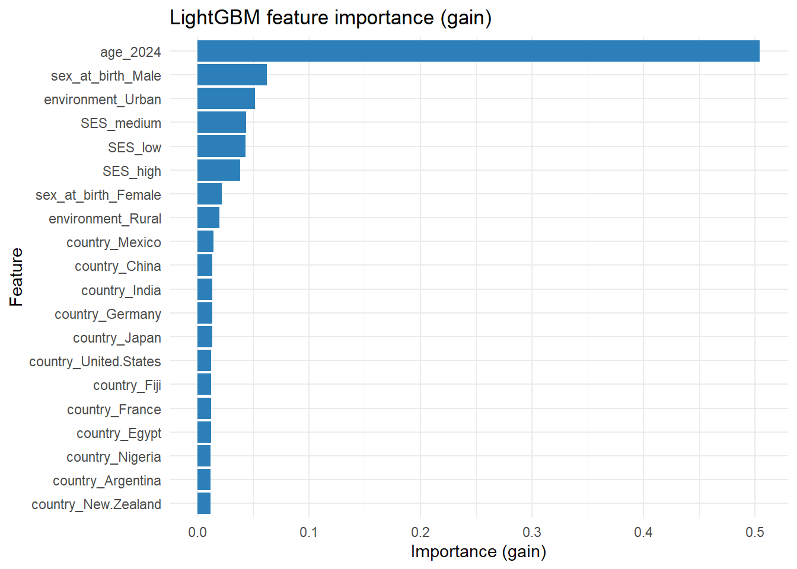

needed <- c("tidyverse", "lubridate", "skimr", "gtsummary",
"epiR", "broom", "sandwich", "lmtest",
"tidymodels", "lightgbm", "bonsai", "vip")
to_install <- needed[!suppressWarnings(
sapply(needed, requireNamespace, quietly = TRUE)
)]
if (length(to_install) > 0) {
install.packages(to_install, dependencies = TRUE)
}
library(tidyverse)
library(lubridate)
library(skimr)
library(gtsummary)
library(epiR)
library(broom)
library(sandwich)
library(lmtest)
# Modeling (tidymodels + LightGBM)
library(tidymodels)
library(lightgbm)
library(bonsai)
library(vip)
set.seed(123) # for reproducibility where randomness is used
# Helper to compute age (in years) at a given date
age_at <- function(birthdate, on_date) {
floor(as.numeric(difftime(on_date, birthdate, units = "days")) / 365.25)
}
# Define code sets used across the analysis
insomnia_icd10 <- c("G47.0", "F51.0")
antidepressant_atc <- c("N06AB04", "N06AB05", "N06AB10", "N06AA09")Quantitative data analysis
Overview
In this exercise you will: - Load three simulated datasets - Compute summary statistics with skimr and gtsummary - Estimate the prevalence of problem_sleeping in 2010 - Estimate the incidence of ICD-10 insomnia - Create a 2x2 table (sleeping problems vs stressed in 2024) with epiR - Model risk of ICD-10 insomnia using GLM with adjustment - Fit and interpret a machine learning model
Throughout, we will guide you step-by-step and explain what each chunk does.
Setup
We load the packages we will use. If a package is missing, uncomment the install.packages lines and run once.
1) Load the data
We read three CSVs from the processed_data folder. We also parse date columns and ensure key variables are consistently typed.
overall_df <- readr::read_csv(
"../processed_data/overall_data.csv"
)
survey_df <- readr::read_csv(
"../processed_data/survey_data.csv"
)
register_df <- readr::read_csv(
"../processed_data/health_register_data.csv"
)
# Quick peek
glimpse(overall_df)Rows: 10,000
Columns: 6
$ ID <chr> "P00001", "P00002", "P00003", "P00004", "P00005", "P00006…
$ birthdate <date> 1987-06-27, 1995-06-09, 2006-06-08, 1984-06-05, 2005-03-…
$ sex_at_birth <chr> "Male", "Female", "Female", "Female", "Male", "Male", "Fe…
$ country <chr> "Canada", "Fiji", "United States", "South Africa", "Germa…
$ environment <chr> "Urban", "Urban", "Rural", "Urban", "Rural", "Urban", "Ur…
$ SES <chr> "low", "low", "medium", "medium", "low", "low", "low", "l…glimpse(survey_df)Rows: 30,000
Columns: 6
$ ID <chr> "P00001", "P00001", "P00001", "P00002", "P00002", "P0…
$ age <dbl> 22, 31, 36, 15, 24, 29, 4, 13, 18, 26, 35, 40, 5, 14,…
$ feeling_lonely <chr> "no", "yes", "no", "no", "yes", "no", "yes", "no", "n…
$ problem_sleeping <chr> "no", "no", "no", "yes", "yes", "no", "yes", "no", "n…
$ feeling_stressed <chr> "no", "no", "yes", "yes", "yes", "yes", "yes", "no", …
$ datettime <date> 2010-06-15, 2019-06-15, 2024-06-15, 2010-06-15, 2019…glimpse(register_df)Rows: 22,162
Columns: 4
$ ID <chr> "P00001", "P00001", "P00002", "P00002", "P00003", "P0…
$ measurement_type <chr> "ATC", "ATC", "ATC", "ICD-10", "ICD-10", "ICD-10", "I…
$ measurement <chr> "A10BA02", "C07AB02", "C07AB02", "G43.9", "E11.9", "I…
$ datettime <date> 2005-12-12, 2021-01-14, 2003-06-06, 2004-10-16, 2007…# Ensure categorical variables are factors with consistent levels
overall_df <- overall_df |>
mutate(
sex_at_birth = factor(sex_at_birth, levels = c("Male", "Female")),
environment = factor(environment, levels = c("Urban", "Rural")),
SES = factor(SES, levels = c("low", "medium", "high")),
country = factor(country)
)
survey_df <- survey_df |>
mutate(
problem_sleeping = factor(problem_sleeping, levels = c("yes", "no")),
feeling_stressed = factor(feeling_stressed, levels = c("yes", "no")),
feeling_lonely = factor(feeling_lonely, levels = c("yes", "no"))
)
register_df <- register_df |>
mutate(
measurement_type = factor(measurement_type, levels = c("ICD-10", "ATC"))
)2) Merge overall data into survey and register data
We create: - merged_survey: one row per person per survey time, with demographics - merged_register: register events enriched with demographics
We also compute age at survey date in merged_survey.
merged_survey <- survey_df |>
left_join(overall_df, by = "ID") |>
mutate(
year = lubridate::year(datettime),
age = age_at(birthdate, datettime)
)
merged_register <- register_df |>
left_join(overall_df, by = "ID")3a) Summary statistics for survey data (skimr and gtsummary)
We start with a general skim of the merged_survey dataset, then build a Table 1 using gtsummary (stratified by sex and overall).
# Skim a subset of variables for readability
merged_survey |>
select(
age, sex_at_birth, country, environment, SES,
problem_sleeping, feeling_stressed, feeling_lonely, year
) |>
skim()| Name | select(…) |
| Number of rows | 30000 |
| Number of columns | 9 |
| _______________________ | |
| Column type frequency: | |
| factor | 7 |
| numeric | 2 |
| ________________________ | |
| Group variables | None |
Variable type: factor
| skim_variable | n_missing | complete_rate | ordered | n_unique | top_counts |
|---|---|---|---|---|---|
| sex_at_birth | 0 | 1 | FALSE | 2 | Mal: 15273, Fem: 14727 |
| country | 0 | 1 | FALSE | 18 | Bra: 1824, Col: 1794, Jap: 1770, Ind: 1701 |
| environment | 0 | 1 | FALSE | 2 | Urb: 20589, Rur: 9411 |
| SES | 0 | 1 | FALSE | 3 | med: 14928, low: 9081, hig: 5991 |
| problem_sleeping | 0 | 1 | FALSE | 2 | no: 20405, yes: 9595 |
| feeling_stressed | 0 | 1 | FALSE | 2 | no: 16194, yes: 13806 |
| feeling_lonely | 0 | 1 | FALSE | 2 | no: 18590, yes: 11410 |
Variable type: numeric
| skim_variable | n_missing | complete_rate | mean | sd | p0 | p25 | p50 | p75 | p100 | hist |
|---|---|---|---|---|---|---|---|---|---|---|
| age | 0 | 1 | 22.47 | 9.97 | 1 | 16 | 22 | 30 | 43 | ▂▆▇▆▃ |
| year | 0 | 1 | 2017.67 | 5.79 | 2010 | 2010 | 2019 | 2024 | 2024 | ▇▁▁▇▇ |
# A gtsummary "Table 1" by sex_at_birth (survey-level)
tbl_summary(
merged_survey |>
select(
sex_at_birth, age, country, environment, SES,
problem_sleeping, feeling_stressed, feeling_lonely
),
by = sex_at_birth,
type = list(age ~ "continuous2"),
statistic = list(
all_continuous() ~ "{mean} ({sd})",
all_categorical() ~ "{n} / {N} ({p}%)"
),
missing = "no"
) |>
add_overall() |>
modify_header(label ~ "**Variable**") |>
modify_spanning_header(c("stat_1", "stat_2") ~ "**Sex at birth**")| Variable | Overall N = 30,0001 |
Sex at birth
|
|
|---|---|---|---|
| Male N = 15,2731 |
Female N = 14,7271 |
||
| age | |||
| Mean (SD) | 22 (10) | 22 (10) | 23 (10) |
| country | |||
| Argentina | 1,647 / 30,000 (5.5%) | 837 / 15,273 (5.5%) | 810 / 14,727 (5.5%) |
| Australia | 1,587 / 30,000 (5.3%) | 834 / 15,273 (5.5%) | 753 / 14,727 (5.1%) |
| Brazil | 1,824 / 30,000 (6.1%) | 915 / 15,273 (6.0%) | 909 / 14,727 (6.2%) |
| Canada | 1,608 / 30,000 (5.4%) | 819 / 15,273 (5.4%) | 789 / 14,727 (5.4%) |
| China | 1,659 / 30,000 (5.5%) | 828 / 15,273 (5.4%) | 831 / 14,727 (5.6%) |
| Colombia | 1,794 / 30,000 (6.0%) | 897 / 15,273 (5.9%) | 897 / 14,727 (6.1%) |
| Egypt | 1,689 / 30,000 (5.6%) | 846 / 15,273 (5.5%) | 843 / 14,727 (5.7%) |
| Fiji | 1,668 / 30,000 (5.6%) | 888 / 15,273 (5.8%) | 780 / 14,727 (5.3%) |
| France | 1,590 / 30,000 (5.3%) | 852 / 15,273 (5.6%) | 738 / 14,727 (5.0%) |
| Germany | 1,587 / 30,000 (5.3%) | 843 / 15,273 (5.5%) | 744 / 14,727 (5.1%) |
| India | 1,701 / 30,000 (5.7%) | 882 / 15,273 (5.8%) | 819 / 14,727 (5.6%) |
| Japan | 1,770 / 30,000 (5.9%) | 888 / 15,273 (5.8%) | 882 / 14,727 (6.0%) |
| Mexico | 1,695 / 30,000 (5.7%) | 837 / 15,273 (5.5%) | 858 / 14,727 (5.8%) |
| New Zealand | 1,632 / 30,000 (5.4%) | 825 / 15,273 (5.4%) | 807 / 14,727 (5.5%) |
| Nigeria | 1,632 / 30,000 (5.4%) | 858 / 15,273 (5.6%) | 774 / 14,727 (5.3%) |
| South Africa | 1,623 / 30,000 (5.4%) | 834 / 15,273 (5.5%) | 789 / 14,727 (5.4%) |
| United Kingdom | 1,635 / 30,000 (5.5%) | 780 / 15,273 (5.1%) | 855 / 14,727 (5.8%) |
| United States | 1,659 / 30,000 (5.5%) | 810 / 15,273 (5.3%) | 849 / 14,727 (5.8%) |
| environment | |||
| Urban | 20,589 / 30,000 (69%) | 10,344 / 15,273 (68%) | 10,245 / 14,727 (70%) |
| Rural | 9,411 / 30,000 (31%) | 4,929 / 15,273 (32%) | 4,482 / 14,727 (30%) |
| SES | |||
| low | 9,081 / 30,000 (30%) | 4,545 / 15,273 (30%) | 4,536 / 14,727 (31%) |
| medium | 14,928 / 30,000 (50%) | 7,665 / 15,273 (50%) | 7,263 / 14,727 (49%) |
| high | 5,991 / 30,000 (20%) | 3,063 / 15,273 (20%) | 2,928 / 14,727 (20%) |
| problem_sleeping | 9,595 / 30,000 (32%) | 4,387 / 15,273 (29%) | 5,208 / 14,727 (35%) |
| feeling_stressed | 13,806 / 30,000 (46%) | 6,812 / 15,273 (45%) | 6,994 / 14,727 (47%) |
| feeling_lonely | 11,410 / 30,000 (38%) | 5,603 / 15,273 (37%) | 5,807 / 14,727 (39%) |
| 1 n / N (%) | |||
3b) Summarize health register data and include counts in gtsummary
First, we summarize the register events overall and by code groups of interest (insomnia ICD-10 and antidepressant ATC). Then, we compute the number of insomnia diagnoses and antidepressant dispensations per person.
# Overall register event counts by type
reg_counts_type <- merged_register |>
count(measurement_type, name = "n_events")
reg_counts_type# A tibble: 2 × 2
measurement_type n_events
<fct> <int>
1 ICD-10 14582
2 ATC 7580# Top ICD-10 and ATC codes
top_icd10 <- merged_register |>
filter(measurement_type == "ICD-10") |>
count(measurement, sort = TRUE, name = "n") |>
slice_head(n = 10)
top_icd10# A tibble: 10 × 2
measurement n
<chr> <int>
1 M54.5 1796
2 N39.0 1783
3 E11.9 1774
4 F32.0 1753
5 G43.9 1710
6 I10 1698
7 K21.9 1694
8 J45.9 1684
9 G47.0 353
10 F51.0 337top_atc <- merged_register |>
filter(measurement_type == "ATC") |>
count(measurement, sort = TRUE, name = "n") |>
slice_head(n = 10)
top_atc# A tibble: 8 × 2
measurement n
<chr> <int>
1 N02BE01 1562
2 C07AB02 1532
3 R03AC02 1502
4 A10BA02 1456
5 N06AB10 408
6 N06AB04 377
7 N06AB05 376
8 N06AA09 367# Total insomnia events and unique people
insomnia_summary <- merged_register |>
filter(measurement_type == "ICD-10", measurement %in% insomnia_icd10) |>
summarize(
insomnia_events = n(),
people_with_insomnia = n_distinct(ID)
)
insomnia_summary# A tibble: 1 × 2
insomnia_events people_with_insomnia
<int> <int>
1 690 690# Total antidepressant events and unique people
antidepressant_summary <- merged_register |>
filter(measurement_type == "ATC", measurement %in% antidepressant_atc) |>
summarize(
antidepressant_events = n(),
people_with_antidepressant = n_distinct(ID)
)
antidepressant_summary# A tibble: 1 × 2
antidepressant_events people_with_antidepressant
<int> <int>
1 1528 15284) Prevalence of problem_sleeping in 2010
We define prevalence as the proportion with problem_sleeping == “yes” in the 2010 survey wave.
prev_2010 <- merged_survey |>
filter(year == 2010) |>
summarise(
n = n(),
cases = sum(problem_sleeping == "yes", na.rm = TRUE),
prev = cases / n
)
prev_2010# A tibble: 1 × 3
n cases prev
<int> <int> <dbl>
1 10000 2400 0.24Compute a 95% CI for the prevalence using a binomial exact test.
ci_2010 <- merged_survey |>
filter(year == 2010) |>
transmute(y = as.integer(problem_sleeping == "yes")) |>
summarise(n = n(), cases = sum(y), .by = NULL)
binom_ci <- binom.test(ci_2010$cases, ci_2010$n)
binom_ci
Exact binomial test
data: ci_2010$cases and ci_2010$n
number of successes = 2400, number of trials = 10000, p-value < 2.2e-16
alternative hypothesis: true probability of success is not equal to 0.5
95 percent confidence interval:
0.2316560 0.2484957
sample estimates:
probability of success
0.24 Tip: You may also stratify by sex, country, etc., to explore differences.
merged_survey |>
filter(year == 2010) |>
group_by(sex_at_birth) |>
summarise(
n = n(),
cases = sum(problem_sleeping == "yes", na.rm = TRUE),
prev = cases / n,
.groups = "drop"
)# A tibble: 2 × 4
sex_at_birth n cases prev
<fct> <int> <int> <dbl>
1 Male 5091 1080 0.212
2 Female 4909 1320 0.2695) Incidence of ICD-10 insomnia
We will estimate incidence after a common baseline (2010-06-15): - Define insomnia ICD-10 codes - Exclude prevalent cases with insomnia before baseline - Among those at risk, compute: - Cumulative incidence (incidence proportion) from baseline to 2024-12-31 - Incidence rate per 1,000 person-years using person-time
admin_end <- as.Date("2024-12-31")
baseline <- as.Date("2010-06-15")
# First insomnia date per ID (if any)
first_insomnia <- merged_register |>
filter(
measurement_type == "ICD-10",
measurement %in% insomnia_icd10
) |>
group_by(ID) |>
summarize(
first_insomnia_date = min(datettime, na.rm = TRUE),
.groups = "drop"
)
# Merge first insomnia with overall, compute risk set at baseline
risk_df <- overall_df |>
select(ID, birthdate) |>
left_join(first_insomnia, by = "ID") |>
mutate(
prevalent_before_bl = !is.na(first_insomnia_date) &
first_insomnia_date < baseline,
at_risk = !prevalent_before_bl
)
# Compute incidence among those at risk
incidence_df <- risk_df |>
filter(at_risk) |>
mutate(
event_post_bl = !is.na(first_insomnia_date) &
first_insomnia_date >= baseline &
first_insomnia_date <= admin_end,
t0 = baseline,
t1 = if_else(event_post_bl, first_insomnia_date, admin_end),
pt_years = as.numeric(t1 - t0) / 365.25
)
# Incidence proportion (cumulative incidence)
inc_prop <- incidence_df |>
summarize(
N_at_risk = n(),
events = sum(event_post_bl),
inc_prop = events / N_at_risk
)
inc_prop# A tibble: 1 × 3
N_at_risk events inc_prop
<int> <int> <dbl>
1 9670 360 0.0372# Incidence rate per 1,000 person-years
inc_rate <- incidence_df |>
summarize(
events = sum(event_post_bl),
pt = sum(pt_years),
rate_per_1000_py = (events / pt) * 1000
)
inc_rate# A tibble: 1 × 3
events pt rate_per_1000_py
<int> <dbl> <dbl>
1 360 138084. 2.616) 2x2 table: sleeping problems vs feeling stressed
We build a 2x2 table with tidyverse, then pass the counts to epiR to obtain risk ratio, odds ratio, and confidence intervals.
count_data <- merged_survey |>
filter(year == 2024) |>
select(ID, problem_sleeping, feeling_stressed) |>
group_by(feeling_stressed, problem_sleeping) |>
summarize(n = n())
count_data# A tibble: 4 × 3
# Groups: feeling_stressed [2]
feeling_stressed problem_sleeping n
<fct> <fct> <int>
1 yes yes 3319
2 yes no 1753
3 no yes 824
4 no no 4104epi_2x2 <- epi.2by2(count_data, method = "cross.sectional", digits = 2, conf.level = 0.95, units = 100, interpret = TRUE)
epi_2x2 Outcome+ Outcome- Total Prev risk *
Exposure+ 3319 1753 5072 65.44 (64.11 to 66.75)
Exposure- 824 4104 4928 16.72 (15.69 to 17.79)
Total 4143 5857 10000 41.43 (40.46 to 42.40)
Point estimates and 95% CIs:
-------------------------------------------------------------------
Prev risk ratio 3.91 (3.67, 4.18)
Prev odds ratio 9.43 (8.58, 10.37)
Attrib prev in the exposed * 48.72 (47.04, 50.39)
Attrib fraction in the exposed (%) 74.45 (72.73, 76.07)
Attrib prev in the population * 24.71 (23.29, 26.13)
Attrib fraction in the population (%) 59.64 (58.04, 61.23)
-------------------------------------------------------------------
Uncorrected chi2 test that OR = 1: chi2(1) = 2444.665 Pr>chi2 = <0.001
Fisher exact test that OR = 1: Pr>chi2 = <0.001
Wald confidence limits
CI: confidence interval
* Outcomes per 100 population units
Measures of association strength:
The prevalence risk of the outcome among those that were exposure positive was 3.91 (95% CI 3.67 to 4.18) times the prevalence risk of the outcome among those that were exposure negative. The prevalence odds of the outcome among those that were exposure positive was 9.43 (95% CI 8.58 to 10.37) times the prevalence odds of the outcome among those that were exposure negative.
Measures of effect in the exposed:
Exposure to exposure changed the prevalence risk of the outcome among those that were exposure positive by +48.72 (95% CI +47.04 to +50.39) per 100 population units. Among those that were exposure positive 89% (95% CI 89% to 90%) of the outcome cases were attributable to exposure.
Number needed to treat:
Exposure to exposure changed the prevalence risk of the outcome among those that were exposure positive by +48.72 (95% CI +47.04 to +50.39) per 100 population units. The number needed to expose to exposure to increase the outcome frequency by one was 2.05 (95% CI 1.98 to 2.13).
Measures of effect in the population:
Exposure to exposure changed the prevalence risk of the outcome among those that were exposure positive and exposure negative by +24.71 (95% CI +23.29 to +26.13) per 100 population units. Among those that were exposure positive and exposure negative 60% (95% CI 58% to 61%) of the outcome cases were attributable to exposure. 7) Adjusted risk of ICD-10 insomnia if having sleeping problems (GLM)
We estimate the risk ratio (preferred over odds ratio for common outcomes) for incident insomnia after baseline, comparing those with vs without sleeping problems in 2010, adjusting for age, sex, country, environment, and SES. We use a Poisson regression with robust standard errors to approximate risk ratios.
Steps: - Exposure: problem_sleeping at 2010 survey - Outcome: incident insomnia after 2010-06-15 - Adjusters: age at 2010, sex_at_birth, country, environment, SES
# Build the baseline (2010) analysis dataset
baseline_2010 <- merged_survey |>
filter(year == 2010) |>
select(
ID, birthdate, sex_at_birth, country, environment, SES,
problem_sleeping, datettime
) |>
rename(baseline_date = datettime) |>
mutate(age_2010 = age_at(birthdate, baseline_date))
# Merge with incidence outcome (from section 5)
analysis_df <- baseline_2010 |>
left_join(
incidence_df |>
select(ID, event_post_bl),
by = "ID"
) |>
left_join(
risk_df |>
select(ID, at_risk),
by = "ID"
) |>
filter(at_risk) |>
mutate(
problem_sleeping_2010 = forcats::fct_drop(problem_sleeping),
has_insomnia_post2010 = as.integer(event_post_bl)
) |>
select(
ID, has_insomnia_post2010, problem_sleeping_2010, age_2010,
sex_at_birth, country, environment, SES
) |>
drop_na()
# Fit Poisson regression with log link for risk ratios
mod_rr <- glm(
has_insomnia_post2010 ~ problem_sleeping_2010 + age_2010 +
sex_at_birth + country + environment + SES,
family = poisson(link = "log"),
data = analysis_df
)
# Robust (sandwich) SEs for valid CIs
vc <- sandwich::vcovHC(mod_rr, type = "HC0")
ct <- lmtest::coeftest(mod_rr, vcov. = vc)
ct
z test of coefficients:
Estimate Std. Error z value Pr(>|z|)
(Intercept) -1.9519719 0.2401187 -8.1292 4.321e-16 ***
problem_sleeping_2010no -0.5579861 0.1110360 -5.0253 5.027e-07 ***
age_2010 -0.0381061 0.0066062 -5.7683 8.009e-09 ***
sex_at_birthFemale 0.1157344 0.1043520 1.1091 0.26740
countryAustralia -0.2761892 0.2850565 -0.9689 0.33260
countryBrazil -0.1891257 0.2677231 -0.7064 0.47993
countryCanada -0.8329465 0.3387360 -2.4590 0.01393 *
countryChina -0.6143407 0.3125808 -1.9654 0.04937 *
countryColombia -0.2638706 0.2736092 -0.9644 0.33484
countryEgypt -0.5472363 0.2998088 -1.8253 0.06796 .
countryFiji -0.1935040 0.2693697 -0.7184 0.47254
countryFrance -0.3759000 0.2895088 -1.2984 0.19415
countryGermany -0.1279862 0.2695839 -0.4748 0.63496
countryIndia -0.4488260 0.2900884 -1.5472 0.12181
countryJapan -0.2885619 0.2734048 -1.0554 0.29122
countryMexico -0.3451888 0.2801954 -1.2320 0.21796
countryNew Zealand -0.2290318 0.2734919 -0.8374 0.40235
countryNigeria -0.7385131 0.3279010 -2.2522 0.02431 *
countrySouth Africa -0.8332557 0.3376379 -2.4679 0.01359 *
countryUnited Kingdom -0.4797174 0.2997608 -1.6003 0.10952
countryUnited States -0.1500794 0.2676078 -0.5608 0.57492
environmentRural -0.0603302 0.1131099 -0.5334 0.59377
SESmedium -0.1545851 0.1159286 -1.3335 0.18238
SEShigh -0.1686946 0.1484654 -1.1363 0.25585
---
Signif. codes: 0 '***' 0.001 '**' 0.01 '*' 0.05 '.' 0.1 ' ' 1# Tidy exponentiated estimates (risk ratios)
rr_out <- broom::tidy(mod_rr) |>
mutate(
se_robust = sqrt(diag(vc)),
z = estimate / se_robust,
p.value = 2 * pnorm(abs(z), lower.tail = FALSE),
rr = exp(estimate),
conf.low = exp(estimate - 1.96 * se_robust),
conf.high = exp(estimate + 1.96 * se_robust)
) |>
select(term, rr, conf.low, conf.high, p.value)
rr_out# A tibble: 24 × 5
term rr conf.low conf.high p.value
<chr> <dbl> <dbl> <dbl> <dbl>
1 (Intercept) 0.142 0.0887 0.227 4.32e-16
2 problem_sleeping_2010no 0.572 0.460 0.712 5.03e- 7
3 age_2010 0.963 0.950 0.975 8.01e- 9
4 sex_at_birthFemale 1.12 0.915 1.38 2.67e- 1
5 countryAustralia 0.759 0.434 1.33 3.33e- 1
6 countryBrazil 0.828 0.490 1.40 4.80e- 1
7 countryCanada 0.435 0.224 0.844 1.39e- 2
8 countryChina 0.541 0.293 0.998 4.94e- 2
9 countryColombia 0.768 0.449 1.31 3.35e- 1
10 countryEgypt 0.579 0.321 1.04 6.80e- 2
# ℹ 14 more rowsInterpretation: The coefficient for problem_sleeping_2010yes is the adjusted risk ratio for incident insomnia after 2010 among those with sleeping problems at baseline vs those without.
8) Predict sleeping problems (LightGBM via tidymodels) and importance
We will predict problem_sleeping in 2024 from age, sex, country, environment, and SES. We fit a LightGBM classifier via tidymodels (bonsai) and plot feature importances.
# Prepare 2024 data for modeling
rf_2024 <- merged_survey |>
filter(year == 2024) |>
transmute(
problem_sleeping = forcats::fct_drop(problem_sleeping),
age_2024 = age,
sex_at_birth,
country,
environment,
SES
) |>
drop_na()
# Ensure target is a factor with two levels
rf_2024 <- rf_2024 |>
mutate(problem_sleeping = factor(problem_sleeping, levels = c("yes", "no")))
# 80/20 stratified split (preserves class balance)
set.seed(123) # ensure reproducible split
rf_split <- initial_split(
rf_2024,
prop = 0.80,
strata = problem_sleeping
)
rf_train <- training(rf_split)
rf_test <- testing(rf_split)
# Recipe on training data only (prevents leakage)
sleep_rec <- recipe(
problem_sleeping ~ age_2024 + sex_at_birth + country +
environment + SES,
data = rf_train
) |>
step_zv(all_predictors()) |>
step_novel(all_nominal_predictors()) |>
step_dummy(all_nominal_predictors(), one_hot = TRUE)
# LightGBM model spec (reasonable defaults; no tuning to keep it simple)
lgb_spec <- boost_tree(
mode = "classification",
trees = 1000,
learn_rate = 0.05,
tree_depth = 6,
min_n = 5,
loss_reduction = 0.0,
sample_size = 0.8
) |>
set_engine("lightgbm", num_threads = 0, verbose = -1)
# Workflow
lgb_wf <- workflow() |>
add_model(lgb_spec) |>
add_recipe(sleep_rec)
# Fit on training set
lgb_fit <- fit(lgb_wf, data = rf_train)Evaluate on held-out test set.
preds <- predict(lgb_fit, rf_test, type = "prob") |>
bind_cols(
predict(lgb_fit, rf_test, type = "class"),
rf_test |> select(problem_sleeping)
)
yardstick::roc_auc(preds, truth = problem_sleeping, .pred_yes)# A tibble: 1 × 3
.metric .estimator .estimate
<chr> <chr> <dbl>
1 roc_auc binary 0.621yardstick::accuracy(preds, truth = problem_sleeping, .pred_class)# A tibble: 1 × 3
.metric .estimator .estimate
<chr> <chr> <dbl>
1 accuracy binary 0.593yardstick::conf_mat(preds, truth = problem_sleeping, estimate = .pred_class) Truth
Prediction yes no
yes 377 362
no 452 810Extract and plot feature importance. We pull the underlying LightGBM model, compute gain-based importance, and visualize it.
# Extract underlying LightGBM booster and compute importance
lgb_engine <- workflows::extract_fit_engine(lgb_fit)
imp <- lightgbm::lgb.importance(lgb_engine)
imp_tbl <- as_tibble(imp) |>
arrange(desc(Gain)) |>
mutate(Feature = forcats::fct_reorder(Feature, Gain))
imp_tbl |>
select(Feature, Gain, Cover, Frequency) |>
head(20)# A tibble: 20 × 4
Feature Gain Cover Frequency
<fct> <dbl> <dbl> <dbl>
1 age_2024 0.505 0.369 0.436
2 sex_at_birth_Male 0.0622 0.0410 0.0628
3 environment_Urban 0.0517 0.0296 0.0568
4 SES_medium 0.0434 0.0223 0.0493
5 SES_low 0.0432 0.0242 0.0492
6 SES_high 0.0382 0.0263 0.0423
7 sex_at_birth_Female 0.0218 0.000913 0.0235
8 environment_Rural 0.0197 0.00110 0.0205
9 country_Mexico 0.0145 0.0295 0.0167
10 country_China 0.0134 0.0284 0.0158
11 country_India 0.0132 0.0291 0.0152
12 country_Germany 0.0131 0.0257 0.0152
13 country_Japan 0.0130 0.0236 0.0154
14 country_United.States 0.0124 0.0264 0.0148
15 country_Fiji 0.0123 0.0276 0.0148
16 country_France 0.0123 0.0254 0.015
17 country_Egypt 0.0121 0.0255 0.0151
18 country_Nigeria 0.0117 0.0283 0.0147
19 country_Argentina 0.0116 0.0281 0.014
20 country_New.Zealand 0.0115 0.0250 0.014 # Plot top 20 features by gain
imp_tbl |>
slice_head(n = 20) |>
ggplot(aes(x = Feature, y = Gain)) +
geom_col(fill = "#2C7FB8") +
coord_flip() +
labs(
title = "LightGBM feature importance (gain)",
x = "Feature",
y = "Importance (gain)"
) +
theme_minimal()
Wrap-up
You have: - Combined surveys with registers and demographics - Described the data using skimr and gtsummary - Summarized health registers and integrated register-based counts into gtsummary - Estimated prevalence and incidence - Built a 2x2 table and obtained effect measures using epiR - Modeled adjusted risk using poisson regression with robust SEs - Fit a machine learning model and interpreted feature importance
Feel free to play with the code